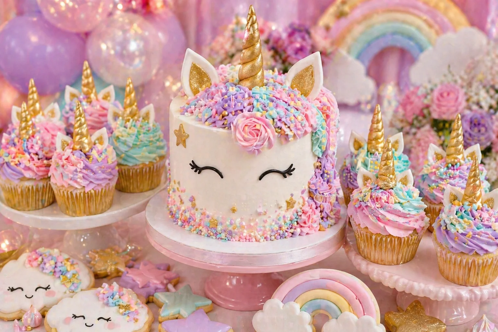
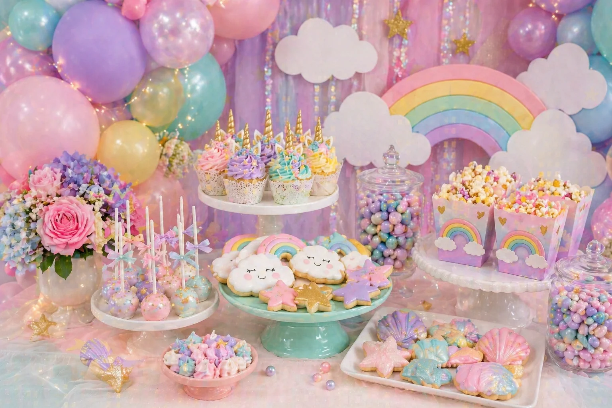

A unicorn party is a magical children's birthday theme filled with soft colours, rainbows, clouds, stars, glitter and pearl details. With a pastel balloon garland, a unicorn cake, colourful cupcakes and cloud-shaped cookies, the dessert table can become the main photo moment of the whole celebration.
At Little Moment Studio, our focus is balloon styling and celebration setups. We do not make cakes or cupcakes ourselves, but we know how important the dessert table is to the overall party look. This guide covers unicorn party inspiration — colour palettes, balloon ideas, three styling approaches and sweet treat ideas that work beautifully together.
If you would like cupcakes or a cake to complement your balloon display, we are happy to recommend a trusted local cake maker.
Unicorn Party Colour Palettes
Start with the colour palette before choosing balloons, cake or sweet treats. Pick four to six soft colours and repeat them across every element on the table.
Pastel Rainbow
Blush pink, lilac, mint, baby blue and yellow. Classic, bright and magical.
Pink & Gold
Soft pink, ivory, pearl white and gold. Refined and photo-friendly.
Magical Unicorn
Lilac, aqua, pink and pearl white. Dreamy and iridescent.
Cloud & Rainbow
Baby blue, white, pastel yellow and pink. Soft sky-inspired styling.
Idea 1: Pastel Rainbow Unicorn Table
A pastel rainbow unicorn table is the classic version of this theme. It feels bright, dreamy and magical while staying soft enough for a beautiful party setup. The combination of blush pink, lilac, mint, baby blue and yellow gives the table an unmistakable unicorn identity without needing a single licensed character in sight.
| Element | Pastel Rainbow Unicorn Idea |
|---|---|
| Balloon garland | Blush pink, lilac, mint, baby blue and yellow with pearl white filler |
| Backdrop | Rainbow arch, cloud cut-outs or soft shimmer fabric |
| Cake | Unicorn cake with gold horn, ears, closed-eye detail and pastel buttercream mane |
| Cupcakes | Pastel swirls in party colours with gold horn toppers and pearl sprinkles |
| Cookies | Clouds, rainbows, stars and unicorn faces |
| Cake pops | Pastel rainbow pops with gold star or pearl details |
| Sweet jars | Pearl sweets, pastel marshmallows and colour-matched confections |
| Stands | White cake stands and pastel trays with iridescent fabric |
This is the strongest all-round unicorn party look because the palette is instantly recognisable and photographs beautifully across all lighting conditions. The key is choosing five soft tones and repeating all of them consistently — across the balloons, cake, cupcakes and cookies — so the table feels designed rather than assembled.
Balloon tip
For a pastel rainbow garland, use blush pink, lilac, mint, baby blue and yellow latex balloons as the base, with pearl white balloons as filler throughout. Add gold chrome balloons as accents — three or four in a larger garland is enough to add a magical finish without losing the soft pastel feel.
Idea 2: Unicorn Cake & Cupcake Display

Unicorn cake and cupcake display styled by Little Moment Studio, Sittingbourne — pastel buttercream, gold horns, unicorn ears and pearl details
A unicorn cake and cupcake display is perfect when you want the cake to be the unmistakable centrepiece of the table. Cupcakes that repeat the same colours and details from the cake — gold horns, pastel swirls, pearl sprinkles — make the whole setup feel carefully coordinated rather than thrown together.
| Element | Cake & Cupcake Display Idea |
|---|---|
| Cake | Unicorn cake with gold horn, ears, closed-eye detail and pastel mane in party colours |
| Cupcakes | Pink, lilac, mint and blue swirls with gold horn toppers and pearl sprinkles |
| Cookies | Cloud and rainbow cookies to frame the cake stand |
| Florals | Soft roses or ranunculus in blush and ivory beside the cake |
| Cake stand | White or perspex stand raised above the cupcake tier |
| Balloon garland | Pastel garland arching above the table to frame the display |
| Sweet jars | Pearl sweets and pastel confections on either side |
For this style, a tiered cupcake stand works well — place the unicorn cake on the top tier and cupcakes on the levels below. The height difference between the cake and the cupcakes creates visual interest without needing lots of props.
For step-by-step unicorn cupcake designs, see our birthday cupcake ideas guide.
Idea 3: Cloud & Rainbow Dessert Table

Cloud and rainbow unicorn party table — a softer, sky-inspired alternative to the full rainbow palette
A cloud and rainbow dessert table is a softer version of the unicorn theme. It focuses less on unicorn faces and more on magical, sky-inspired details. Baby blue, white, pastel yellow and blush pink create a light, airy feel that works especially well for spring and summer birthdays.
| Element | Cloud & Rainbow Idea |
|---|---|
| Balloon garland | Baby blue, white, pink and yellow with pearl white filler |
| Backdrop | Cloud cut-outs, rainbow arch or soft shimmer fabric in sky tones |
| Cake | Cloud and rainbow cake or pastel buttercream cake with rainbow detail |
| Cupcakes | White swirl cupcakes with rainbow sprinkles, cloud toppers and pearl details |
| Cookies | Cloud shapes, stars, rainbows and moon-shaped cookies |
| Cake pops | White or pastel pops with pearl or rainbow sprinkle coating |
| Props | Star lights, cloud shapes and soft florals in ivory and pale yellow |
This is a lovely option if you want a magical table without making every element unicorn-shaped. The cloud and rainbow details are enough to carry the theme while keeping the overall look light, elegant and very photogenic.
Styling tip
For a cloud and rainbow table, keep the fabric and stand colours white or ivory rather than mixing in coloured tablecloths. The soft pastel tones of the balloons, cake and treats provide all the colour the table needs — a clean white base lets them stand out rather than compete.
What to Include on a Unicorn Dessert Table
A unicorn dessert table can be simple or full depending on the size of the party. Start with the cake and cupcakes, then add cookies, cake pops and sweet jars to fill the space.
| Treat | Unicorn Party Idea |
|---|---|
| Birthday cake | Unicorn cake with horn, ears, closed-eye detail and pastel mane |
| Cupcakes | Pastel swirls with gold horn toppers, unicorn ears and pearl sprinkles |
| Cookies | Clouds, rainbows, stars, moons and unicorn faces |
| Cake pops | Pastel rainbow pops, gold star pops or white pearl-coated pops |
| Macarons | Pink, lilac, mint, blue or pearl white |
| Sweet jars | Pearl sweets, pastel marshmallows and colour-matched confections |
| Meringues | Soft pastel texture; easy to colour-match to the party palette |
| Mini desserts | Pastel pots with pearl and sprinkle details |
For most children's parties, one unicorn cake, twelve to twenty-four cupcakes, cloud and rainbow cookies, and a few sweet jars is enough to make the table look full and beautifully styled. Props such as unicorn figures, star lights and soft florals fill remaining space without adding more food than guests can eat.
For practical advice on arranging a children's party table, see our guide to how to style a dessert table for a children's party.
Unicorn Party Balloon Ideas
The balloon display creates most of the visual impact around the dessert table. A pastel garland that frames the backdrop and table is the most effective approach for a unicorn party — and is what transforms a dessert table into a full party setup.
| Theme | Balloon Colours |
|---|---|
| Pastel rainbow unicorn | Blush pink, lilac, mint, baby blue and yellow with pearl white filler |
| Pink & gold unicorn | Blush, ivory, pearl white and gold chrome accents |
| Magical unicorn | Lilac, aqua, pink and pearl white |
| Cloud & rainbow | Baby blue, white, pink and yellow |
| First birthday unicorn | Blush, ivory, mint, baby blue and soft gold |
For a more premium result, keep the palette controlled — five soft colours with one metallic accent creates a cleaner, more considered look than using every pastel tone at once. Pearl white works as a natural filler balloon in any unicorn palette.
See our balloon garlands in Kent page and birthday balloon styling page for packages and availability.
Matching Balloons, Cake & Cupcakes
To make the table feel coordinated, repeat the same colours across the balloons, cake and sweet treats. They do not need to match exactly — they just need to feel like part of the same colour story.
| Balloon Palette | Cake & Cupcake Idea |
|---|---|
| Pink, lilac, mint, blue | Pastel unicorn cake and swirl cupcakes in matching tones |
| Pink, ivory, gold | Pink unicorn cake with gold horn cupcakes and pearl sprinkles |
| Blue, white, yellow | Cloud cake, rainbow cookies and white swirl cupcakes |
| Lilac, aqua, pink | Magical unicorn cupcakes with aqua and lilac swirls |
| Blush, ivory, soft gold | Luxury unicorn cake with ivory and champagne cupcakes |
Your Questions Answered
What colours work best for a unicorn party?
Blush pink, lilac, mint, baby blue and pastel yellow are the classic pastel rainbow unicorn palette and work beautifully for most ages. For a softer, more refined look, blush, ivory, pearl white and gold feel luxurious and photo-friendly. Lilac, aqua, pink and pearl white give a more magical, iridescent feel. Pick four to six soft colours and repeat them consistently across every element.
What balloons should I use for a unicorn party?
A pastel garland in blush pink, lilac, mint, baby blue and yellow with pearl white filler is the most popular choice. Gold chrome balloons are a strong accent — three or four in a larger garland adds a magical finish without overpowering the soft palette. Clear confetti balloons also work well as standalone clusters beside the table.
What cupcakes work well for a unicorn party?
Pastel buttercream swirls in the party colours with gold horn toppers, unicorn ears and pearl sprinkles are the most popular option. Pink, lilac, mint and baby blue swirls with a fondant horn on each cupcake look beautiful and coordinate easily with the cake. For cloud and rainbow tables, white swirl cupcakes with rainbow sprinkles and pearl details work equally well. See our birthday cupcake ideas guide for piping and design inspiration.
What should I include on a unicorn dessert table?
A strong unicorn dessert table includes a unicorn birthday cake as the centrepiece, twelve to twenty-four pastel cupcakes with horn or swirl toppers, cloud and rainbow cookies, star or pearl cake pops, pastel sweet jars and soft floral details. A balloon garland framing the backdrop and table creates most of the visual impact. Keep the styling soft and avoid overcrowding — a few well-chosen elements in a coordinated palette always looks more beautiful than filling every inch of the table.
Can a unicorn party work for a first birthday?
Yes — a unicorn theme is especially lovely for a first birthday because the soft, gentle colours and magical feel photograph beautifully. Keep the palette light: blush, ivory, mint, baby blue and soft gold. Add a number one topper to the unicorn cake and use mini cupcakes alongside it. Pearl white balloons, gentle florals and cloud cookies keep the table soft and perfectly photo-friendly. For more ideas, see our first birthday balloon ideas guide.
Whether you choose the classic pastel rainbow approach, a coordinated cake and cupcake display, or the softer cloud and rainbow styling, the key to a beautiful unicorn party table is consistency. When the balloons, cake, cupcakes and cookies all speak the same gentle colour language, the whole setup feels magical rather than busy.
For more children's birthday party inspiration, see our guides to princess party dessert table ideas, dinosaur party balloon and dessert table ideas and superhero party balloon and dessert table ideas.
Planning a Unicorn Party in Sittingbourne or Kent?
Little Moment Studio creates beautiful pastel balloon displays and celebration setups for children's birthdays across Sittingbourne and Kent. We can also recommend a trusted local cake maker to complete your unicorn dessert table.